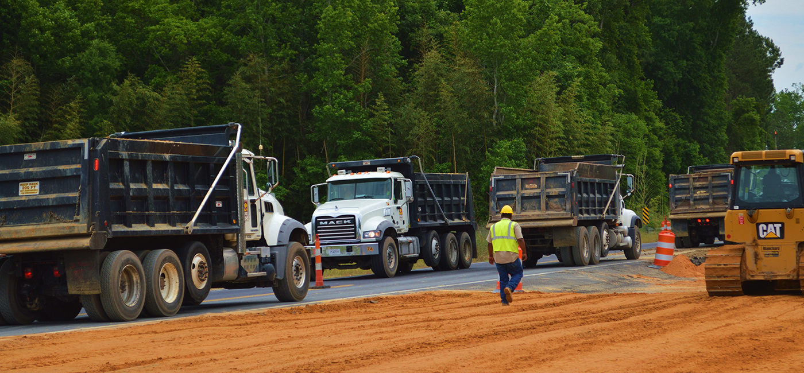

Southern Asphalt
Southern Asphalt has combined years of knowledge and experience from our employees with state-of- the- art technology to ensure the job is done right each and every time. When dealing with us, you will always get more than you expect. We are a full-service organization that includes asphalt and paving, trucking, asphalt tack, and a staff of highly trained and certified operators that supplies the manpower to get the job done. We have our own MDOT certified asphalt plant to ensure that our product meets the highest quality standards. Our product can be custom suited to meet your needs. Whether it's for a state-certified mix, a highway, or an industrial facility, our team will do more than sell you asphalt…we'll deliver the whole experience.
Whether we are laying down another award-winning stretch of state highway or supplying an FAA approved design, we will always go out of our way to deliver The Perfect Mix: Service, Quality, and People. With the wealth of experience at Southern Asphalt we can handle the whole process of solving your paving needs from start to finish. Smart management and decades of varied experience allow us to efficiently allocate just the right amount of resources to provide a quality product, while meeting agreed-upon deadlines.
With unbeatable prices and precise attention to detail, Southern Asphalt offers major corporations, government clients, and individual homeowner’s a like top-quality asphalt pavement services along with impeccable customer care. No other company in the area has the depth of experience and high level of attention to detail found at Southern Asphalt, South Carolina' number one choice for asphalt paving and asphalt repair.
Full Needs Analysis:

Need some advice on the best way to move forward before starting a project? We’re happy to help out. In fact, with our experience we’re able to provide quotes without hiring an outside engineer, helping us save our clients time and money by providing quick and accurate bids. Southern Asphalt applies our considerable experience to offer recommendations to our customers on each project. Instead of just “quoting and paving,” we look for ways reduce cost, enhance performance and extend the lifespan of your paving.
Government Agencies:
Southern Asphalt is regularly hired by local governments as well as state and federally owned agencies to repave parking lots and roadways. These clients turn to Southern Asphalt because the company provides reliable services at an economic price point that simply can't be beat. While other companies must schedule themselves around when they're able to rent appropriate equipment, Southern Asphalt owns and operates all of its own machinery for milling and paving asphalt. This allows Southern Asphalt to keep its prices low and also be more flexible with scheduling, frequently working in the middle of the night to allow for minimal interruption of traffic during regular work hours.

Private Companies:
Major retailers, department stores, and grocery stores choose Southern Asphalt because our team is able to provide a complete range of asphalt repair services according to the wishes and schedule of the client. Unlike other asphalt paving companies that don't own their own equipment, Southern Asphalt is able to work with private companies to complete asphalt repair and resurfacing work in a way that allows a portion of the parking lot to remain open at all times. This helps companies get their parking lots and roadways repaired without inconveniencing their own clients.